 1991-2000
1991-2000 2001-2010
2001-2010 2011-2020
2011-2020 2021-2024
2021-20241991
1. 16 желтоқсанда Қазақстан Тәуелсіздік туралы Декларация қабылдады (ҚР Конституциясы, 1991).
2. Нұрсұлтан Назарбаев елдің алғашқы Президенті болып сайланды(референдум арқылы).
3.КСРО ыдырады, Қазақстан БҰҰ-ға мүше болды.
4. Қазақ КСР Қазақстан Республикасы деп аталды.
5. Тәуелсіздік алғаннан кейін алғашқы дипломатиялық қарым-қатынастар орнатылды (Түркия, АҚШ, Ресеймен).
1. 16 желтоқсанда Қазақстан Тәуелсіздік туралы Декларация қабылдады (ҚР Конституциясы, 1991).
2. Нұрсұлтан Назарбаев елдің алғашқы Президенті болып сайланды(референдум арқылы).
3.КСРО ыдырады, Қазақстан БҰҰ-ға мүше болды.
4. Қазақ КСР Қазақстан Республикасы деп аталды.
5. Тәуелсіздік алғаннан кейін алғашқы дипломатиялық қарым-қатынастар орнатылды (Түркия, АҚШ, Ресеймен).
2001
1. Қазақстан Шанхай ынтымақтастық ұйымына (ШЫҰ) қосылды.
2. АҚШ-пен антитеррорлық ынтымақтастық келісімі жасалды.
3. Қазақстанда алғашқы рет мемлекеттік қызмет реформасы басталды.
4. Ұлттық валютаны тұрақтандыру бағдарламасы жалғасты.
5. Қазақстан ислам конференциясында белсенді рөл атқарды.
1. Қазақстан Шанхай ынтымақтастық ұйымына (ШЫҰ) қосылды.
2. АҚШ-пен антитеррорлық ынтымақтастық келісімі жасалды.
3. Қазақстанда алғашқы рет мемлекеттік қызмет реформасы басталды.
4. Ұлттық валютаны тұрақтандыру бағдарламасы жалғасты.
5. Қазақстан ислам конференциясында белсенді рөл атқарды.
2011
1. Назарбаев "Елбасы" ретінде мәңгілік статус алды
2. Жантөбеде мұнайшылар ереуілі болды
3. Қазақстанда алғашқы рет партиялық тізім бойынша парламент сайлауы өтті
4. Астанада Азиялық қысқы ойындар өткізу құқығын жеңді br 5. Қазақстан-Қытай стратегиялық ынтымақтастық келісімі жаңартылды
1. Назарбаев "Елбасы" ретінде мәңгілік статус алды
2. Жантөбеде мұнайшылар ереуілі болды
3. Қазақстанда алғашқы рет партиялық тізім бойынша парламент сайлауы өтті
4. Астанада Азиялық қысқы ойындар өткізу құқығын жеңді br 5. Қазақстан-Қытай стратегиялық ынтымақтастық келісімі жаңартылды
2021
1. Президент Тоқаев саяси реформаларды жалғастырды.
2. "Халық үніне құлақ асатын мемлекет" тұжырымдамасы айтылды.
3. Парламент Мәжілісіне сайлау өткізілді (қаңтарда).
4. Экономикалық тұрақтылық пен пандемиямен күрес жалғасты.
5. Әлеуметтік қолдау шаралары мен вакцинация басталды.
1. Президент Тоқаев саяси реформаларды жалғастырды.
2. "Халық үніне құлақ асатын мемлекет" тұжырымдамасы айтылды.
3. Парламент Мәжілісіне сайлау өткізілді (қаңтарда).
4. Экономикалық тұрақтылық пен пандемиямен күрес жалғасты.
5. Әлеуметтік қолдау шаралары мен вакцинация басталды.